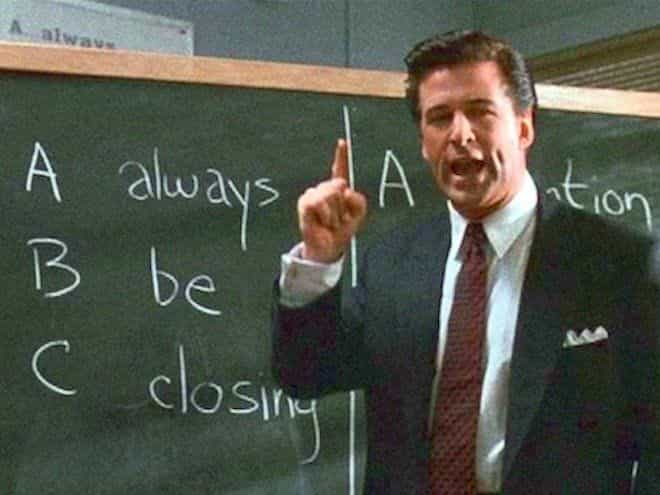

Troy is a game veteran of a decade's standing, and a lover of women, literature, travel and freedom. He is also the author of The Seven Laws of Seduction. Visit his website at Troy Francis.


However handsome, jacked, rich, or well-connected you are, there’s one equaliser in game that all guys face: you have to be able to hold a conversation with a girl. And not just any conversation—you can’t be boring, you must pique her interest, and you must create attraction while at the same time not looking ‘try hard’. You have to have an edge but you can’t be too intimidating or you’ll push her away.
It’s not an easy feat to pull off, and most guys fail at least some of the time, but the plain fact is that no matter what other aces you might hold, the better you can talk to women the more success—measured in intimacy—you’ll get.
When you first approach a girl, you might well be met with disinterest, or perhaps half-hearted encouragement. Unless she is a yes girl who greets you with huge enthusiasm what you won’t be receiving is much help. And after all, why should she help? It is your responsibility as the guy to chat her up, not the other way round. The longer that you can extemporise verbally with little external assistance, the better.
Fortunately there are several ways that you can improve your chat. Here I list my top four.
Reading is hugely important for a whole variety of reasons, but one peripheral benefit of the practice is that it helps you talk to girls in two key ways.
Firstly, if you read a lot you will inevitably furnish your mind with plenty of information that you can talk about. So, if you read a book about, say, sexual dynamics between men and women in the 21st century, then you will be able to steer your conversations in that direction and then drop in the various things that you’ve learned. Reading makes you a more interesting person.
Secondly, reading widely expands both your vocabulary and your ability to logically present a case. If you read about politics for example, then not only will you likely pick up some new words, but also you will find out how politicians couch their arguments, how they evade difficult questions and how they divert in favour of topics that suit their own agendas better. Reading about them will therefore assist your conversation on both a micro and meta level.
Writing helps in a similar way. Talking to someone is about manipulating words effectively in order to communicate information or emotion or both. Although not a verbal form, writing is nonetheless the practice of shaping language to transmit thoughts and feelings, which is exactly what you need to do when you talk to a girl.
I write an article everyday for my website and I have done for some time. Before that I wrote pretty much every day too, for over a decade, although a lot of that work has not been published. This daily commitment to writing has really helped my conversational skills, since what writing compels you to do (particularly writing you know will be read by other people) is to shape what might be somewhat amorphous thoughts into language.
Writing every day also forces you to be creative. It requires you to be an improviser, someone who plucks topics out of thin air and expands on them entertainingly and sometimes at length for his audience. It makes you look for the interesting angle, for the colourful turn of phrase that best encapsulates what you’re trying to say. Again, these are all necessary and transferrable skills needed for talking to girls.
A more direct way of practicing your conversation skills is to start a podcast or a a vlogging channel. I myself record a podcast every week and have fairly recently started putting out videos on YouTube.
It’s amazing how sharp your verbal faculties get when you force yourself to step up to the plate regularly to create spoken content that is enjoyable for other people.
Even if you’re not looking to build a content business or an online brand I would still recommend that you try your hand at one or other of these forms—or both. Not only is it fun but also I guarantee that you’ll see your conversational skills skyrocket as a result.
The subject matter you choose to talk about isn’t really important. You could be giving away your best tips on building IKEA furniture or playing Minecraft. What matters is that you get used to standing in front of a microphone or camera and delivering your ideas in a coherent, clear and engaging way.

So much has been written about the parallels between sales and game already that I am reticent to add to the yottabytes of content already out there. That said, there is no doubt in my mind that working in sales is absolute dynamite as far as improving your conversation (and social) skills is concerned.
After all sales requires you to verbalise the specific benefits of a product to a potential buyer who may or may not be interested. It also requires you to deal with objections (shit tests) and to persist, finding new ways to couch your arguments when others might give up.
For these reasons if you ever get the chance to work in sales, even for a short period of time, I would highly recommend that you do so. Not only will it really help you with chatting up girls, but you might well make some money too.
For a compilation of all Troy’s best game writing, advice and techniques from the last four years buy his new book How To Get Hot Girls Into Bed.
Read Next: How Most Relationships End